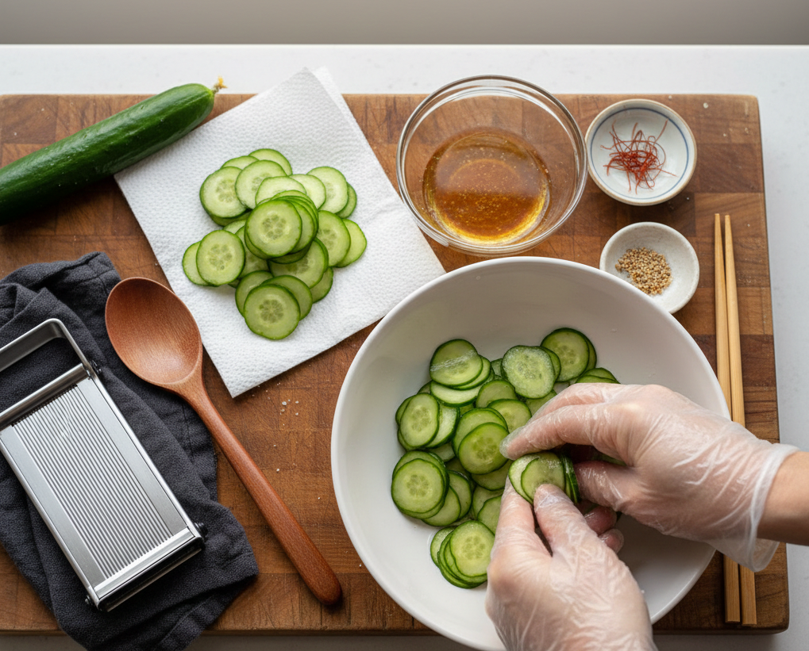

Zurück
Zubereitung: 15min - Ruhezeit: 25min
Kyüri no Sunomono
Zubereitung: 15min - Ruhezeit: 25min

Zutaten (2 Portionen):
- 1 große Gurke
- 1 EL Salz
- 2 Knoblauch Zehen
- 1 Stange Frühlingszwiebel
- 1 EL Sojasauce
- 2 EL Reisessig
- 1 EL Zucker
- 1 TL Chiliflocken
- 1 EL Sesam
- 1 TL Sesamöl
Zubereitung
- Gurke waschen, nach Belieben schälen und schneiden. Mit 1 EL Salz mischen und 25 Minuten ziehen lassen.

- Sesam fettfrei rösten. Frühlingszwiebeln und Knoblauch klein schneiden und mit den restlichen Zutaten zum Dressing vermischen.
- Gurkenflüssigkeit abgießen, Gurken abspülen, abtropfen lassen und unter das Dressing heben. Mit Sesam bestreuen.
- Für optimale Frische den Salat einige Stunden kalt stellen.